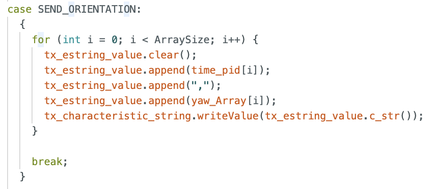
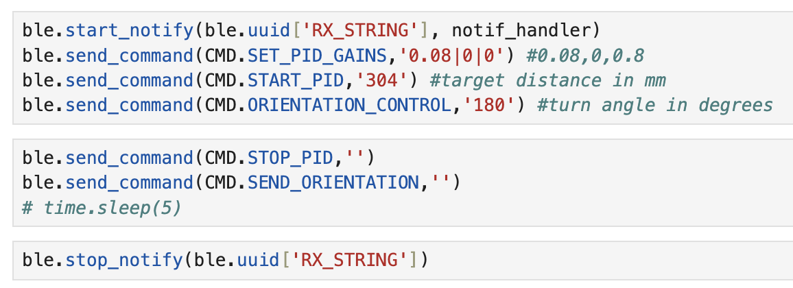

Lab 6: Orientation PID
PRE-LAB
IMPROVING LAB 5: To start this lab, I ran my Lab 5 code multiple times and perfected it. During this debugging process, because I had changed my code from what I had initially, my calibration factor for the wheels ended up decreasing from 1.8 to 1.6. And when I ran my PID, the final control values that work best were: Kp = 0.08, Ki = 0.00001, Kd = 0.8. My final Lab 5 code is:
BLUETOOTH: To improve the way data is collected and sent to the computer, I created a class called MotorControls, which, as the name suggests, is responsible for controlling the motors. This class essentially defines the pins and, depending on the input speed and time, operates the motors accordingly. The code for MotorControl.h is:
Besides this I added a SEND_ORIENTATION command case to the sketch, to be able to send the information to the computer:
My notification handler remained the same as last labs with just a few change in the names, and the way I call the commands is very similar too
TASKS
PID:
Since in Lab 5, my PI controller was the most inaccurate and the most prone to act unexpectedly I decided to use a PID controller. I created a similar function to pos_control for Lab 5, but in this case it is called turn_yaw() which calculates the P, I and D terms according to a desired turn angle and the actual yaw of the robot at the moment. This function is implemented here:
bool turn_yaw(float goal_yaw){
float yaw_error = goal_yaw - z_angle;
float i_control = 0;
bool status = false;
float dt = millis() - last_time;
float p_control = K_p * yaw_error;
if (yaw_error > 0) {
sumError = sumError + (yaw_error * dt);
i_control = K_i * sumError;
if (i_control > 100) i_control = 100;
else if (i_control < -100) i_control = -100;
}
else i_control = 0;
float d_control = K_d * (yaw_error - last_error) / dt;
last_error = yaw_error;
last_time = millis();
float speed = p_control + i_control + d_control;
if (speed > 0){
motors.turn_right(speed,1000);
status = true;
}
else {
motors.turn_left(abs(speed),1000);
status = true;
}
return status; //Commands were completed or not
}
I then included my turn_yaw() function in the command case I made for this lab: